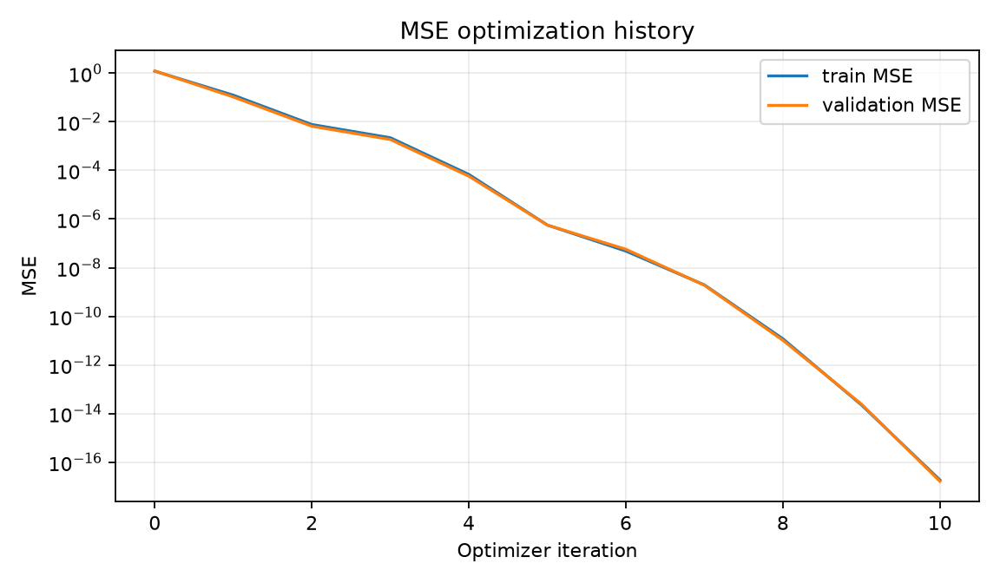
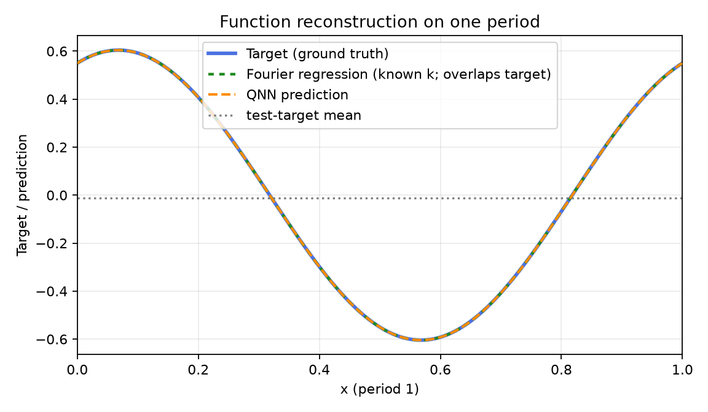
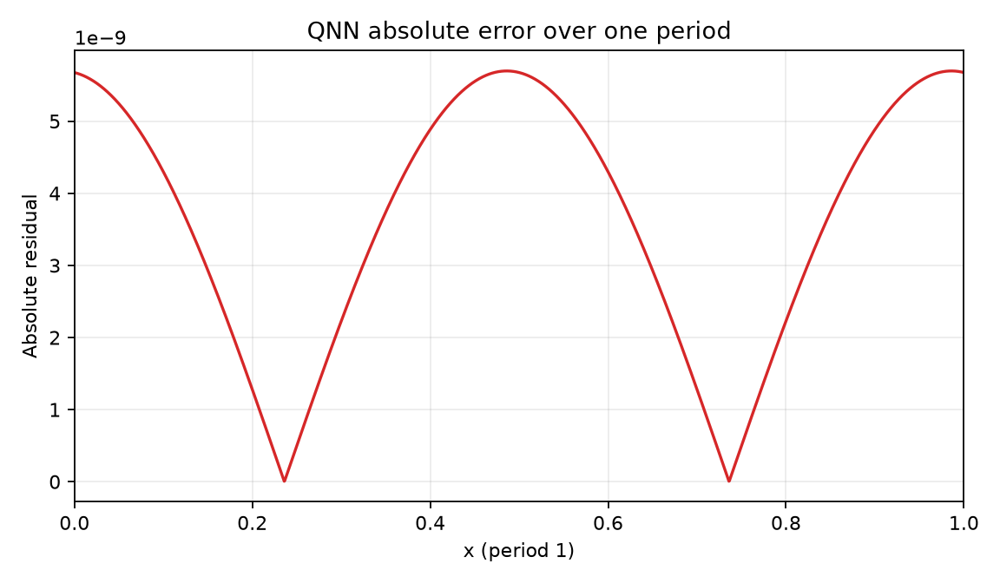
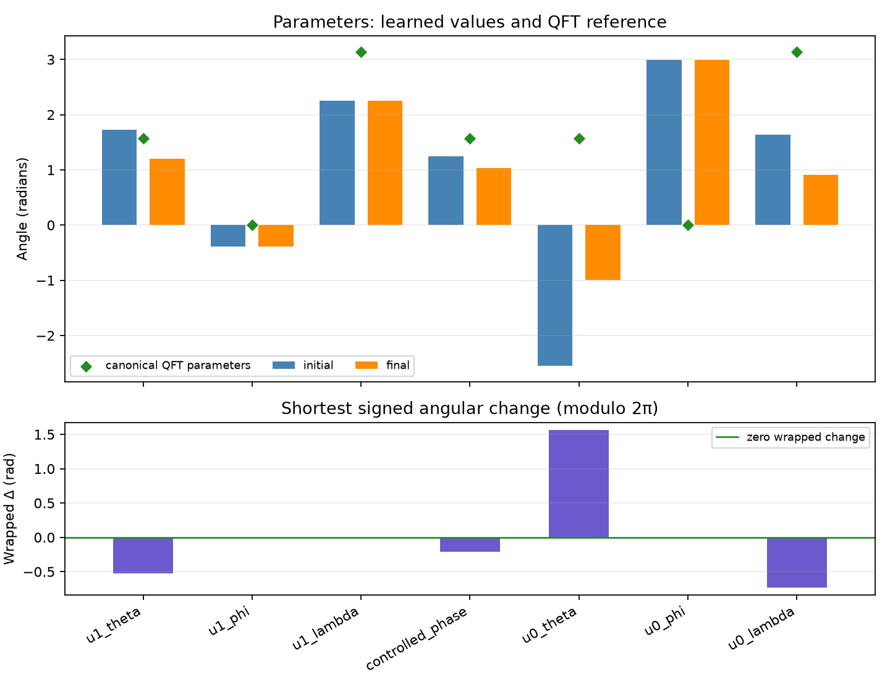

Comparison group: periodic-function-mse-zero-offset-multidataset-ry-angle-encoding-z1-readout
Training loss: MSE only; no Frobenius/process-fidelity term or PINN residual.
Encoding: RY(2πx)|0⟩ on qubit 0, x∈[0,1), period 1.
Readout: ideal Pauli-Z expectation on qubit 1.
Absolute error over one period: mean=3.62655e-09, max=5.69657e-09; defined pointwise as |QNN prediction − target| on the 2048-point periodic grid.
{
"run_id": "20261017T014005586611Z_periodic-function-mse-zero-offset-multidataset_seed-0042_08a24406",
"status": "FINISHED",
"comparison_group": "periodic-function-mse-zero-offset-multidataset-ry-angle-encoding-z1-readout",
"protocol_version": "0.1.0",
"objective": "training-set mean squared error only",
"loss_excludes": [
"process fidelity",
"Frobenius/unitary alignment",
"PINN/physics residual",
"frequency labels"
],
"encoding": "RY(2*pi*x)|0> on q0; x in [0,1), period 1",
"ansatz": "qft2_trainable_u_cp_u_swap",
"readout": "Pauli-Z expectation on q1",
"seed": 42,
"data_seed": 271828,
"optimizer": "L-BFGS-B",
"iterations": 10,
"function_evaluations": 128,
"optimizer_success": true,
"optimizer_message": "CONVERGENCE: NORM OF PROJECTED GRADIENT <= PGTOL",
"elapsed_seconds": 0.16640032999566756,
"initial_train_mse": 1.2128881463836252,
"final_train_mse": 1.8527427550056673e-17,
"validation_mse": 1.6379614116946658e-17,
"test": {
"mse": 1.5775828005772657e-17,
"rmse": 3.97187965650681e-09,
"r2": 0.9999999999999999
},
"constant_baseline_test": {
"mse": 0.1863312904647033,
"rmse": 0.4316610828702343,
"r2": -0.0044279814912950854
},
"known_frequency_fourier_baseline_test": {
"mse": 2.1738817524355308e-32,
"rmse": 1.474408950201921e-16,
"r2": 1.0
},
"spectral_coefficient_mse_k0_to_16": 4.77220474023348e-19,
"dense_grid_absolute_error_mae": 3.626554645256815e-09,
"dense_grid_absolute_error_max": 5.696573879276912e-09,
"target_peak_frequency": 1,
"predicted_peak_frequency": 1,
"frequency_peak_correct": true,
"qft_process_fidelity_diagnostic_only": 0.543970767792795,
"initial_qft_process_fidelity_diagnostic_only": 0.2993071074832549
}




